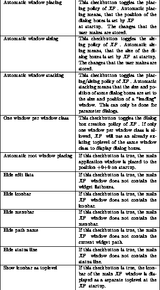
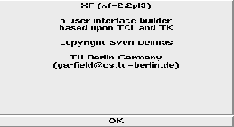

EntryL implements an entry widget with a label at the left side.
EntryLLS implements an entry widget with a label at the left side, and a horizontal scrollbar. The commands for scrolling are set.

Figure: The template EntryLLS
EntryLS implements an entry widget with a label at the left side, and a horizontal scrollbar. The commands for scrolling are set.
EntryS implements an entry widget with a horizontal scrollbar. The commands for scrolling are set.

Figure: The template EntryS